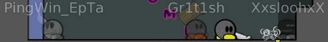
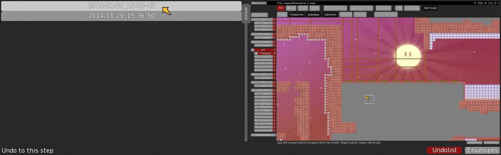
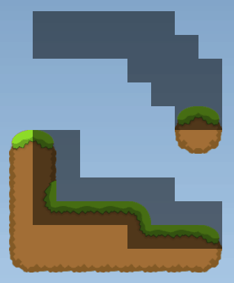
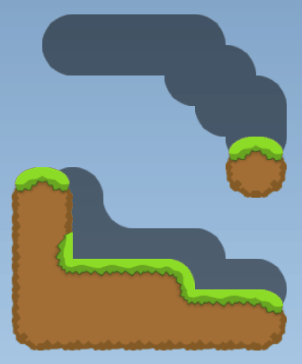

Feature: Tune Zones allow you to have different physics in each part of map (by HMH) (Tutorial, Example gravity.map, gravity.cfg (put it into data/maps right where your DDNet-Server binary is))
Feature: Prediction for stoppers and speedups (by v)
Feature: When a server has more than 16 players, the first 16 voters count
Feature: Mapres preview in editor
Feature: Show unpredicted shadow tee
Feature: Optionally don't show Ninja
Feature: New skins
Fix: Mac OS X version should work without extra libraries
Fix: Doors are properly reset in locked teams
Fix: Sounds settings make sense
Fix: Editor copy & paste is less buggy (by HMH)
Fix: No more annoying "player paused" and "player unpaused" messages
Fix: Newly joined players see ongoing votes
Fix: Crash on strange user inputs in console (by HMH)
/map to vote a map. For example /map adr3 for Adrenaline 3 The first character has to be the first in the map name, all others following somewhere in that order. In our case the map has to start with 'a' and contain 'd', 'r', and '3' in that order. To leave out the first character use % like this: /map %castle to vote for Out of Castle
Solo prediction (Thanks to HMH)
AFK players close their eyes
64 player server (initial work by eeeee, get DDNet client to see all)
Servers in
/showall so you see everyone when zooming out
/dnd to disable global chat and server messages
/mappoints to find out how many points finishing a map will give you
/lock to lock your team
Keep conversing with whispers by using /converse (short: /c) or binding it
/rankteam and /top5team: When you play in a team your team will get a team rank.
Clients can't kick people or kill the server by spamming
AFK players are excluded from votes
Needs less CPU when noone is connected
Client Features
Walls and automapper for them by Broken
bind s +showhookcoll to see where hook will hit exactly
Official DDNet Tiles by 645654 & Phacrum
Display teams in scoreboard
Render players in other teams half transparent (/showothers)

Undo function in editor (initial work by MAP94)

Better and faster server list refresh (by Pata94)
64 player client (initial work by eeeee)
More advanced automapper rules and some for ddnet-tiles, round-tiles, grass_main (Freeze, Unfreeze, Tele) and fadeout

Source (set by mapper)Automapped (grass_main)Automapped (fadeout)

Automapped (round-tiles)
Maps load 30 times faster than in DDRace client
AntiPing (Prediction for grenades and other tees)
More friends and favorites
Better looking entities to play with
Vote window gets moved to scoreboard after you voted
Map using extended teleports and our other new features
Zoom out in all mods (not just Race and DDRace) when you're a spectator
Disable sound notification for server messages
Disable quads for weaker computers, annoying map backgrounds, or to zoom out nicely in maps
Set a map's background color
More responsive with cl_throttle_cpu
Map Features
Tiles for Penalty Time on touch on Switch layer. Touch the tile and time is added to your game time: (left is 1 second, right is 20 minutes, 4 seconds)
New entity: Set number of jumps (0 upwards) in Switch layer
Teleports for weapons and hook
New entities: Start and stop Player Collision, Hooking, Super Jump (PNGs included in Download)
Set maximum players for each team using sv_max_team_size
Map Testing
totele x to go to the teleporter with the number x
tele x y to teleport player x to player y
If your player id is x you can /pause and teleport yourself to the position you're watching with tele x x
Mapper Rules
Mappers mapping for DDraceNetwork have to follow these rules, or their map will not be accepted:
Content
Be creative! Do not steal parts or create parts that are very similar to parts on other maps. Instead use your fantasy and create something unique or improve existing parts significantly.
Make your map fun! Your map is supposed to be fun for players, not to bore them. Avoid time wasting parts.
Do something else than simple (stupid) dummy drag parts
Think about the intended players of your map. A map for moderate should not be a mix of novice and brutal parts. Try to keep the difficulty reasonably homogenous so players don't get bored or frustrated.
Use faily parts very rarely on novice maps
Use faily solo parts very rarely on everything else than brutal maps
Design
Mark every entity the player has to know about with a visible tile.
Your map's design should have some contrast so it's playable without perfect light conditions. On the other hand the contrast shouldn't be too high or it will be painful to look at.
The finish line should be reachable from the winner room so a team can finish if the last one dies
Make sure your map works, design is done, and when you feel like it's ready for release, send us your map.
Create multiple spawn points so that they can not be blocked. Don't place spawns directly on the ground for the same reason.
Don't place teleporter destination (TO) tiles on the ground, as they can make players bounce away unexpectedly. Better lift them up by one tile and set more than one tile.
Make your layers as small as possible. This makes your map faster to load for clients and use less resources on the server. Note that all game layers have the same size.
Make sure automapper works as you think. Don't turn small freeze corners into freeze tiles and make sure your walls don't have holes.
Parts should have enough space for multiple tees. Often tees don't play in groups of two!
Sometimes it makes sense to have unfreezes when you get teleported back, especially in parts where you need many tries.
Avoid using checkpoints, because it's more difficult and easier to cheat.
Run the included server, DDRace-Server.exe on Windows
Connect to it using the IP address localhost:8303
Hit F2 to open RCON and log in with the password rcon
In RCON type change_map YourMapName to load your map
If you want your server online setup port forwarding on your router
Useful Binds
bind 7 toggle cl_showhud 0 1
bind 8 toggle gfx_high_detail 0 1
bind 9 toggle cl_show_quads 0 1
bind 0 toggle cl_show_entities 0 1
bind s +showhookcoll
Get a line for aiming
bind x +toggle inp_mousesens 1 100
Low mouse sense for improved hooking when you hold x
bind c toggle cl_antiping 0 1
Toggle antiping
bind minus "zoom-; say /showall 1"
Enable seeing everyone when you zoom out
bind i "chat all /c "
Whisper to the last person you whispered to
Staff
DDraceNetwork was founded by Megaman with support by Delo and .me'. deen manages the servers and developes DDraceNetwork. Broken supplies the USA server, Chicken the Persian server. For new features or bugs get in touch with deen or talk about them on Trac. New maps can also be submitted on Trac or to one of our testers:
You can often find us on the DDraceNetwork servers of course. Otherwise you can post on Trac for suggestions and questions. There's also an IRC channel #ddnet on Quakenet (Webchat). deen can be reached by email at deen@ddnet.tw.